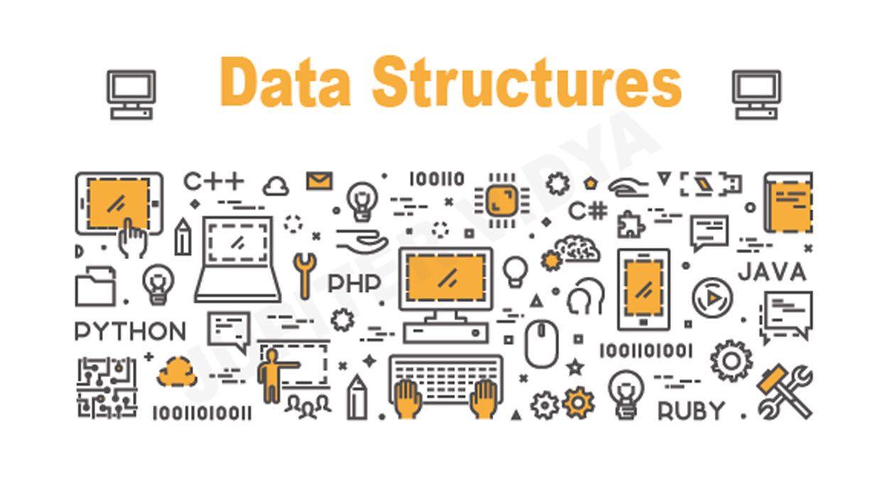

Objects and Data Structures
Introduction

Info
This is based on Ryan McDermott's clean-code-javascript that was written in December 2016. Some of the principles may be very JavaScript specific. Most of the principles will apply to all languages and this is a good working base to start from.
Use getters and setters
Using getters and setters to access data on objects could be better than simply looking for a property on an object. "Why?" you might ask. Well, here's an unorganized list of reasons why:
- When you want to do more beyond getting an object property, you don't have to look up and change every accessor in your codebase.
- Makes adding validation simple when doing a
set. - Encapsulates the internal representation.
- Easy to add logging and error handling when getting and setting.
- You can lazy load your object's properties, let's say getting it from a server.
Bad
function makeBankAccount() { // ... return { balance: 0 // ... }; } const account = makeBankAccount(); account.balance = 100;
Good
function makeBankAccount() { // this one is private let balance = 0; // a "getter", made public via the returned object below function getBalance() { return balance; } // a "setter", made public via the returned object below function setBalance(amount) { // ... validate before updating the balance balance = amount; } return { // ... getBalance, setBalance }; } const account = makeBankAccount(); account.setBalance(100);
Make objects have private members
This can be accomplished through closures (for ES5 and below).
Bad
const Employee = function(name) { this.name = name; }; Employee.prototype.getName = function getName() { return this.name; }; const employee = new Employee("John Doe"); console.log(`Employee name: ${employee.getName()}`); // Employee name: John Doe delete employee.name; console.log(`Employee name: ${employee.getName()}`); // Employee name: undefined
Good
function makeEmployee(name) { return { getName() { return name; } }; } const employee = makeEmployee("John Doe"); console.log(`Employee name: ${employee.getName()}`); // Employee name: John Doe delete employee.name; console.log(`Employee name: ${employee.getName()}`); // Employee name: John Doe